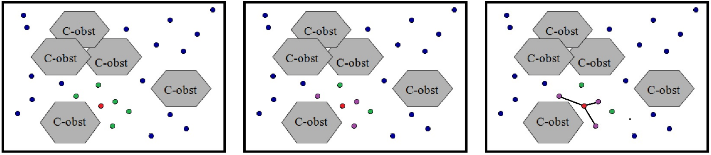
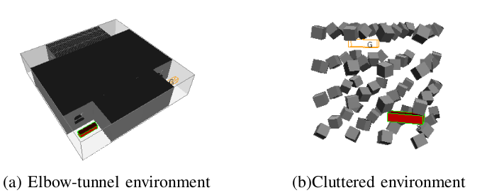
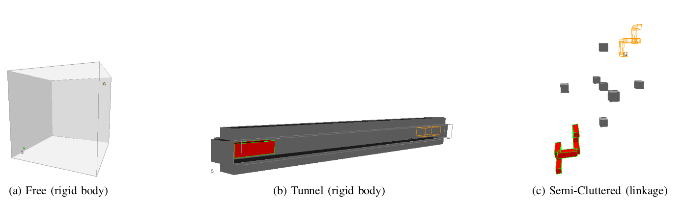
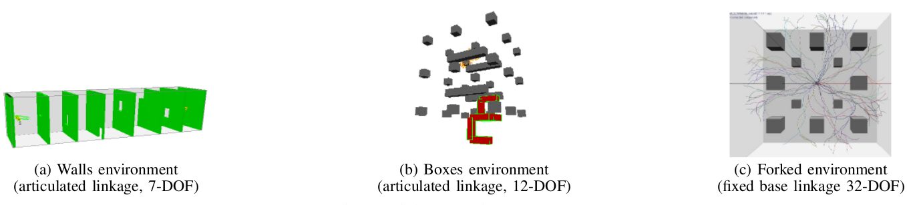
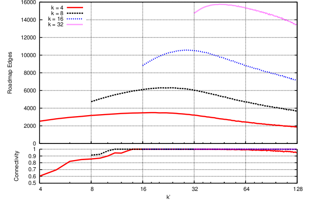
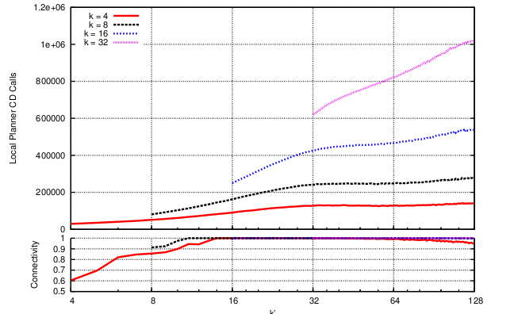
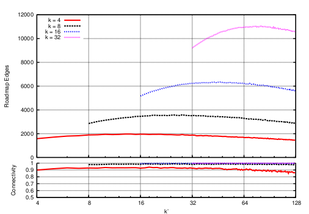

IEEE/RSJ International Conference on Intelligent Robots and Systems (IROS), 2012
Probabilistic Roadmap Methods (PRMs) are widely used for robot motion planning in high-dimensional configuration spaces. A critical component of roadmap construction is selecting candidate neighbors for each configuration. Traditionally, PRMs connect each configuration to its nearest neighbors according to a distance metric.
While selecting the closest configurations tends to produce connections that are easier to validate, this strategy can result in redundant connection attempts and roadmaps with limited connectivity. Conversely, selecting neighbors entirely at random can introduce longer connections, but these connections may be difficult to validate and can reduce roadmap quality.
This work introduces LocalRand, a neighbor-selection strategy that combines the benefits of local neighborhood selection with randomization. LocalRand first identifies a larger set of nearby configurations and then randomly selects a subset of those configurations as connection candidates.
Given a configuration and two parameters, k and k', LocalRand identifies the k' closest configurations and randomly selects k of them for connection. The parameter k controls the number of neighbors selected, while k' controls the size of the neighborhood from which those neighbors are selected.

Illustration of local randomized neighbor selection. A local neighborhood is identified, and a random subset of configurations is selected for connection.
By varying k', LocalRand interpolates between two conventional strategies:
When k' = k, LocalRand is equivalent to the conventional nearest-neighbor strategy. The closest configurations are always selected.
When the candidate neighborhood includes all configurations, LocalRand becomes equivalent to selecting neighbors randomly from the entire roadmap.
Intermediate values of k' provide controlled randomization within a local neighborhood, allowing the planner to balance connection distance and roadmap diversity.
LocalRand was evaluated across a variety of motion-planning environments involving both rigid-body robots and articulated linkages. The experiments examined how neighbor-selection policies affect roadmap connectivity, the number of edges generated, local-planner success, and computational cost.
The study included environments ranging from relatively free configuration spaces to challenging narrow passages and cluttered environments. Experiments were conducted with robots of varying dimensionality, including articulated linkages with up to 32 degrees of freedom.

IRigid Body Environments

Environments for baseline study

Linkage Environments
The experimental evaluation compared LocalRand against conventional k-closest and k-random neighbor-selection strategies. Roadmap quality was evaluated using the number of generated edges, normalized connectivity, and other structural metrics.

LocalRand (k k ) – numedges – Tunnel (M) (6-DOF)

LocalRand (k k ) – lpcd – Tunnel (M) (6-DOF)

LocalRand (k k ) – numedges – Semi-cluttered (12- DOF)
The results showed that LocalRand can produce roadmaps with greater connectivity and more edges than conventional k-closest selection while maintaining computational costs comparable to the traditional strategy. The benefits were particularly apparent in environments where longer connections were more likely to be successfully validated.
The performance of LocalRand depends on the size of the neighborhood from which random connections are selected. The paper presents a methodology for choosing k' based on the characteristics of the planning environment and the number of desired connections.
The experimental results suggest that selecting a neighborhood approximately two to three times larger than the number of desired neighbors can be beneficial for difficult environments, while relatively unconstrained environments may benefit from a larger neighborhood.
LocalRand demonstrates that the neighbor-selection strategy used during roadmap construction can have a significant effect on connectivity and overall roadmap quality. By introducing randomization into local neighbor selection, the approach reduces some of the redundancy inherent in nearest-neighbor strategies and encourages the exploration of connections that may improve the structure of the roadmap.
This work highlights the importance of balancing locality and randomness in sampling-based motion planning and provides a practical approach for improving PRM roadmap construction across a range of robot types and planning environments.
Troy McMahon, Sam Jacobs, Bryan Boyd, Lydia Tapia, and Nancy M. Amato. Local Randomization in Neighbor Selection Improves PRM Roadmap Quality. IEEE/RSJ International Conference on Intelligent Robots and Systems (IROS), 2012.